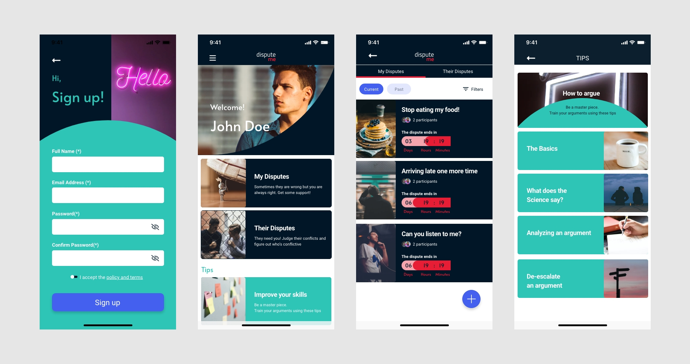
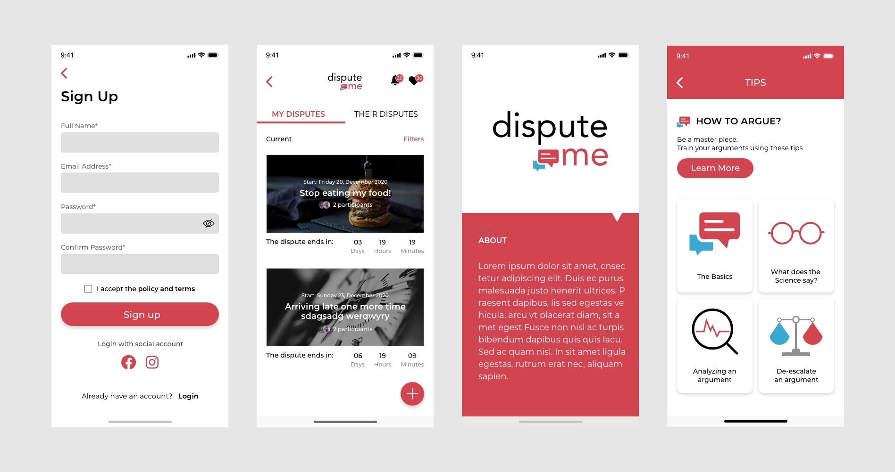

It was my very first project to design a mobile app.
I updated the design. the previous design was out of date.
I had no idea how to design a mobile app but I liked to challenge myself to update this app.
- TIMELINE:
1 month - My ROLE:
Update all UI - TEAM:
Desing solo - DELIVERABLES:
Hi-fidelity Mockup, Prototyping
Before
After
Hi-Fidelity Mockup
WHAT I LEARNED
1. Understanding UX/UI Design Process
2. Interaction: Even though small interactive details of a product, their impact is big and they make the UX easier.